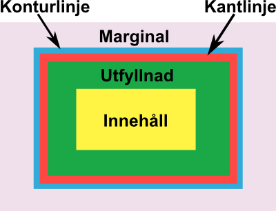

Med flextid menas vanligen att du har rätt att kunna vara flexibel i hur du lägger din arbetstid i början och slutet av arbetsdagen inom ramen för fastlagda tider, till exempel klockan 7-9 eller 16-18. Flextid ska inte blandas ihop med övertid, mertid , beredskap eller jourtid.

CSS har en “Box Model” som definerar hur margin, border, padding och content förhåller sig till varandra. Nedanstående bild exemplifierar.
